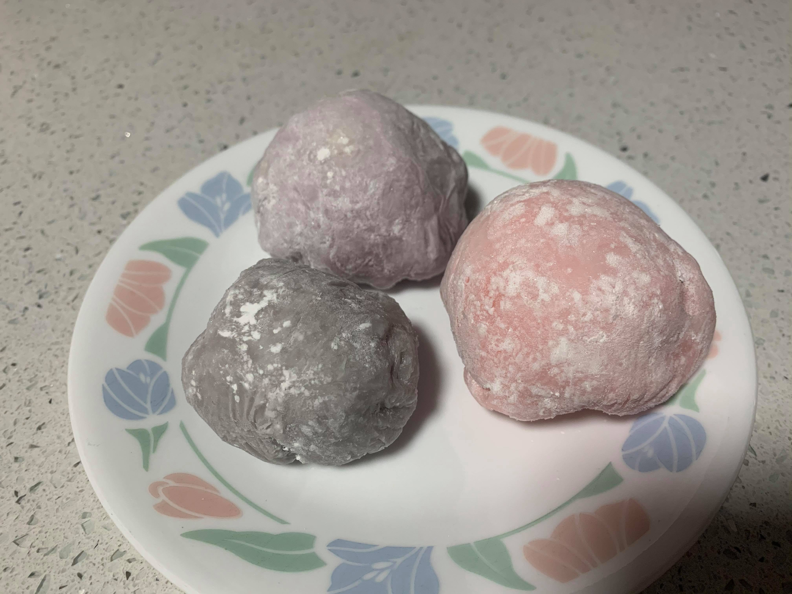

Mochi

Ingredients:
- 1 cup Mochiko
- 1/4 cup Sugar
- 1 cup Water
Instructions:
- In a large microwave-safe bowl, combine the sweet rice flour, sugar, and water. Cover with plastic wrap and microwave for one minute.
- Stir the mixture with a whisk to remove any lumps. Re-cover with plastic wrap and microwave for another minute.
- Dip a rubber spatula in water and stir the rice mixture again. Re-cover with plastic wrap and microwave for 30 more seconds. At this point you can add and mix in any food dye if desired.
- Prepare to mold the mochi by generously dusting a large parchment paper with cornstarch. With a wet spatula, scrape the dough onto the cornstarch and dust the top of the dough with more cornstarch.
- Mold the mochi into any desired shape and place into the refrigerator for 30 minutes. Remove any excess cornstarch as desired.